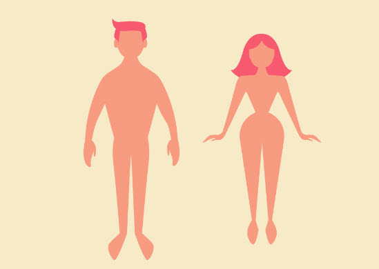

Conocemos nuestro cuerpo por fuera
2
Duración: 1 sesión
Agrupamiento: gran grupo
En esta actividad vamos a aprender cómo es nuestro cuerpo por fuera y también vamos a conocer qué son los sentidos y cuáles son sus órganos.
Para comenzar, vamos a pulsar sobre los iconos que aparecen en la imagen y podemos hacerlo sobre el hombre o sobre la mujer, indistintamente. Al hacerlo, se abrirá un vídeo con las partes del cuerpo.
{"typeGame":"Mapa","instructions":"","showMinimize":false,"showActiveAreas":false,"author":"","url":"resources/cuerpo_humano_fuera.jpg","authorImage":"CREARTIC. Elaborado con Genially","altImage":"Imagen del cuerpo humano por fuera","itinerary":{"showClue":false,"clueGame":"","percentageClue":40,"showCodeAccess":false,"codeAccess":"","messageCodeAccess":""},"points":[{"id":"p1312751707055","title":"Partes de la cabeza","type":1,"url":"","video":"https://www.youtube.com/watch?v=k_NOnprvcew","x":0.338074067679558,"y":0.09195995145631068,"x1":0,"y1":0,"footer":"","author":"","alt":"","iVideo":0,"fVideo":36000,"eText":"","iconType":5,"question":"","question_audio":"","toolTip":"","link":"","map":{"id":"a1312751707055","pts":[{"id":"p1048039122617","title":"","type":0,"url":"","video":"","x":0,"y":0,"x1":0,"y1":0,"footer":"","author":"","alt":"","iVideo":0,"fVideo":0,"eText":"","iconType":0,"question":"","question_audio":"","toolTip":"","link":"","map":{"id":"a1048039122617","url":"","alt":"","author":"","pts":[]},"slides":[{"id":"s1048039122617","title":"","url":"","author":"","alt":"","footer":""}],"activeSlide":0}],"url":"","alt":"","author":"","active":0},"slides":[{"id":"s1312751707055","title":"","url":"","author":"","alt":"","footer":""}],"activeSlide":0,"audio":""},{"id":"p411376971637","title":"Partes de la cabeza","type":1,"url":"","video":"https://www.youtube.com/watch?v=k_NOnprvcew","x":0.7013337361878453,"y":0.15409587378640777,"x1":0,"y1":0,"footer":"","author":"","alt":"","iVideo":0,"fVideo":36000,"eText":"","iconType":5,"question":"","question_audio":"","toolTip":"","link":"","map":{"id":"a411376971637","pts":[{"id":"p1080839475575","title":"","type":0,"url":"","video":"","x":0,"y":0,"x1":0,"y1":0,"footer":"","author":"","alt":"","iVideo":0,"fVideo":0,"eText":"","iconType":0,"question":"","question_audio":"","toolTip":"","link":"","map":{"id":"a1080839475575","url":"","alt":"","author":"","pts":[]},"slides":[{"id":"s1080839475575","title":"","url":"","author":"","alt":"","footer":""}],"activeSlide":0}],"url":"","alt":"","author":"","active":0},"slides":[{"id":"s411376971637","title":"","url":"","author":"","alt":"","footer":""}],"activeSlide":0,"audio":""},{"id":"p43787554521","title":"Tronco y extremidades","type":1,"url":"","video":"https://www.youtube.com/watch?v=G8DLBq_pwGA","x":0.343598929558011,"y":0.35797936893203886,"x1":0,"y1":0,"footer":"","author":"","alt":"","iVideo":0,"fVideo":36000,"eText":"","iconType":5,"question":"","question_audio":"","toolTip":"","link":"","map":{"id":"a43787554521","pts":[{"id":"p720065146517","title":"","type":0,"url":"","video":"","x":0,"y":0,"x1":0,"y1":0,"footer":"","author":"","alt":"","iVideo":0,"fVideo":0,"eText":"","iconType":0,"question":"","question_audio":"","toolTip":"","link":"","map":{"id":"a720065146517","url":"","alt":"","author":"","pts":[]},"slides":[{"id":"s720065146517","title":"","url":"","author":"","alt":"","footer":""}],"activeSlide":0}],"url":"","alt":"","author":"","active":0},"slides":[{"id":"s43787554521","title":"","url":"","author":"","alt":"","footer":""}],"activeSlide":0,"audio":""},{"id":"p1031531424166","title":"Tronco y extremidades","type":1,"url":"","video":"https://www.youtube.com/watch?v=G8DLBq_pwGA","x":0.6930464433701657,"y":0.3560376213592233,"x1":0,"y1":0,"footer":"","author":"","alt":"","iVideo":0,"fVideo":36000,"eText":"","iconType":5,"question":"","question_audio":"","toolTip":"","link":"","map":{"id":"a1031531424166","pts":[{"id":"p551789053058","title":"","type":0,"url":"","video":"","x":0,"y":0,"x1":0,"y1":0,"footer":"","author":"","alt":"","iVideo":0,"fVideo":0,"eText":"","iconType":0,"question":"","question_audio":"","toolTip":"","link":"","map":{"id":"a551789053058","url":"","alt":"","author":"","pts":[]},"slides":[{"id":"s551789053058","title":"","url":"","author":"","alt":"","footer":""}],"activeSlide":0}],"url":"","alt":"","author":"","active":0},"slides":[{"id":"s43787554521","title":"","url":"","author":"","alt":"","footer":""}],"activeSlide":0,"audio":""},{"id":"p1570595251757","title":"Los sentidos","type":1,"url":"","video":"https://www.youtube.com/watch?v=a_EfwFzm1ys","x":0.5093447859116023,"y":0.1968143203883495,"x1":0,"y1":0,"footer":"","author":"","alt":"","iVideo":0,"fVideo":36000,"eText":"","iconType":5,"question":"","question_audio":"","toolTip":"","link":"","map":{"id":"a1570595251757","pts":[{"id":"p820259937121","title":"","type":0,"url":"","video":"","x":0,"y":0,"x1":0,"y1":0,"footer":"","author":"","alt":"","iVideo":0,"fVideo":0,"eText":"","iconType":0,"question":"","question_audio":"","toolTip":"","link":"","map":{"id":"a820259937121","url":"","alt":"","author":"","pts":[]},"slides":[{"id":"s820259937121","title":"","url":"","author":"","alt":"","footer":""}],"activeSlide":0}],"url":"","alt":"","author":"","active":0},"slides":[{"id":"s1570595251757","title":"","url":"","author":"","alt":"","footer":""}],"activeSlide":0,"audio":""}],"isScorm":0,"textButtonScorm":"Guardar la puntuación","repeatActivity":false,"textAfter":"","evaluation":0,"selectsGame":[{"typeSelect":0,"numberOptions":4,"quextion":"","options":["","","",""],"solution":"","solutionWord":"","percentageShow":35,"msgError":"","msgHit":""}],"isNavigable":true,"showSolution":true,"timeShowSolution":3,"version":2,"percentajeIdentify":100,"percentajeShowQ":100,"percentajeQuestions":100,"autoShow":false,"optionsNumber":0,"msgs":{"msgSubmit":"Enviar","msgIndicateWord":"Proporcione una palabra o expresión","msgClue":"¡Genial! La pista es:","msgErrors":"Errores","msgHits":"Aciertos","msgScore":"Puntuación","msgMinimize":"Minimizar","msgMaximize":"Maximizar","msgFullScreen":"Pantalla Completa","msgNoImage":"Pregunta sin imágenes","msgSuccesses":"¡Correcto! | ¡Excelente! | ¡Genial! | ¡Muy bien! | ¡Perfecto!","msgFailures":"¡No era eso! | ¡Incorrecto! | ¡No es correcto! | ¡Lo sentimos! | ¡Error!","msgTryAgain":"Necesita al menos un %s% de respuestas correctas para conseguir la información. Vuelva a intentarlo.","msgEndGameScore":"Antes de guardar la puntuación comience la partida.","msgScoreScorm":"La puntuación no se puede guardar porque esta página no forma parte de un paquete SCORM.","msgPoint":"Punto","msgAnswer":"Responder","msgOnlySaveScore":"¡Sólo puede guardar la puntuación una vez!","msgOnlySave":"Sólo puede guardar una vez","msgInformation":"Información","msgYouScore":"Su puntuación","msgOnlySaveAuto":"Su puntuación se guardará después de cada pregunta. Sólo puede jugar una vez.","msgSaveAuto":"Su puntuación se guardará automáticamente después de cada pregunta.","msgSeveralScore":"Puede guardar la puntuación tantas veces como quiera","msgYouLastScore":"La última puntuación guardada es","msgActityComply":"Ya ha realizado esta actividad.","msgPlaySeveralTimes":"Puede realizar esta actividad cuantas veces quiera","msgClose":"Cerrar","msgPoints":"puntos","msgQuestions":"Preguntas","msgAudio":"Audio","msgAccept":"Aceptar","msgYes":"Sí","msgNo":"No","msgShowAreas":"Mostrar áreas activas","msgShowTest":"Mostrar cuestionario","msgGoActivity":"Pulsa aquí para realizar esta actividad","msgSelectAnswers":"Selecciona las opciones correctas y pulsa sobre el botón 'Responder'.","msgCheksOptions":"Marca todas las opciones en el orden adecuado y pulsa sobre el botón 'Responder'.","msgWriteAnswer":"Escribe la palabra o expresión correcta y pulsa en el botón 'Responder'.","msgIdentify":"Identificar","msgSearch":"Buscar","msgClickOn":"Pulsa sobre","msgReviewContents":"Debes repasar el %s% de los contenidos de la actividad antes de completar el cuestionario.","msgScore10":"¡Todo perfecto! ¡Enhorabuena! ¿Deseas repetir esta actividad?","msgScore4":"No has superado esta prueba. Repasa sus contenidos e inténtalo de nuevo. ¿Deseas repetir la actividad?","msgScore6":"¡Estupendo! Has superado la prueba, pero seguro que lo puedes mejorar. ¿Deseas repetir esta actividad?","msgScore8":"¡Casi perfecto! Aún lo puedes hacer mejor. ¿Deseas repetir esta actividad?","msgNotCorrect":"¡No es correcto! Has pulsado sobre","msgNotCorrect1":"¡No es correcto! Has pulsado sobre","msgNotCorrect2":"y la respuesta correcta es","msgNotCorrect3":"¡Prueba otra vez!","msgAllVisited":"¡Genial! Has visitado los puntos necesarios.","msgCompleteTest":"Puedes completar el cuestionario.","msgPlayStart":"Pulse aquí para empezar","msgSubtitles":"Subtítulos","msgSelectSubtitles":"Selecciona un archivo de subtítulos. Formatos válidos:","msgNumQuestions":"Número de preguntas","msgHome":"Inicio","msgReturn":"Volver"}}
Después de ver cada uno de los vídeos, practicaremos lo que hemos aprendido con los robots BeeBot.
Su navegador no es compatible con esta herramienta.